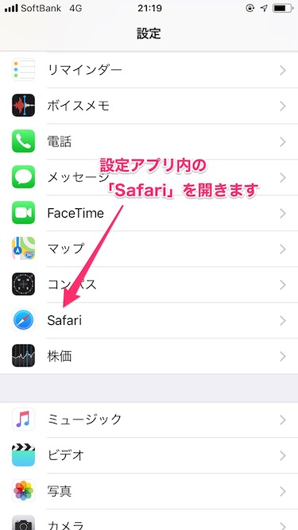
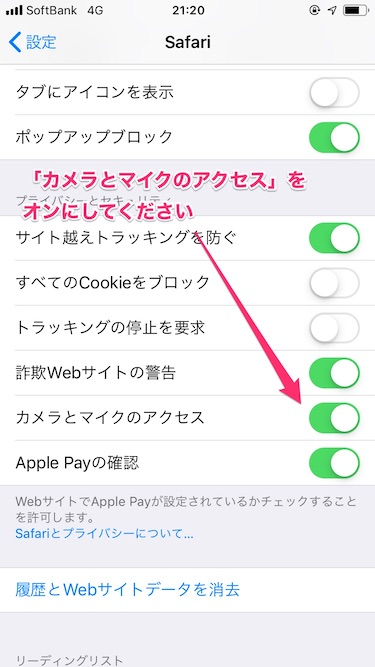
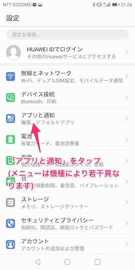
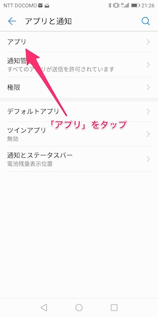
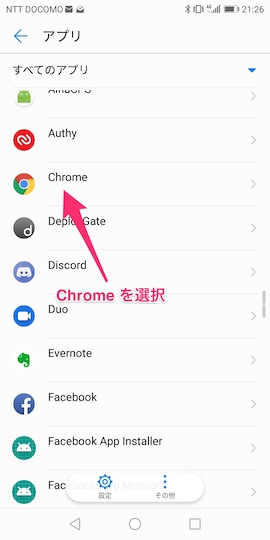
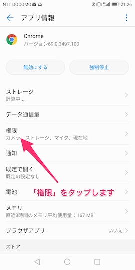
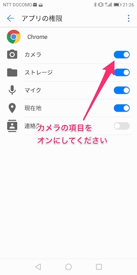
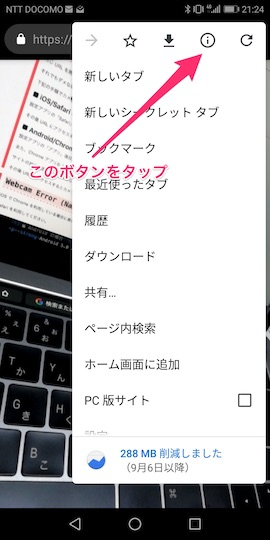
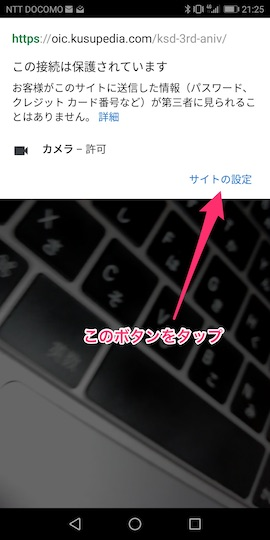
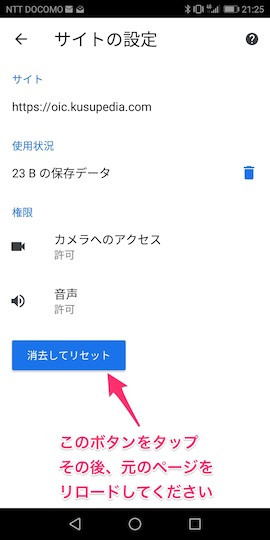

ヘルプ
楠田亜衣奈さんの3周年ライブ記念の AR フラスタ企画 (非公式) をお試しいただきありがとうございます。
AR が動作しない場合は、下記の項目をご確認ください。
最初に：動作環境をご確認ください。
■ iOS の場合
iOS 11.0 以上に対応しております。また、ブラウザには標準の Safari をお使いください。
■ Android の場合
Android 5.0 以上に対応しております。また、ブラウザには最新の Chrome をお使いください。
カメラは起動しているが、マーカー上に何も表示されない。
マーカーがカメラ内に大きく映るようにしてください。
マーカーが光を反射しているとうまく認識しないことがあります。
角度などを変えながら試してみてください。
ネームボードに自分の名前が出てくるのを待つのが大変。
画面右下に名前を次のページに切り替える「SHOW NEXT」ボタンを設置しました。
自分の名前を含むスクリーンショットを撮影するのにご活用ください。
オブジェクトは表示されたが、画面がカクカクする・処理落ちする。
お花のボリュームを増やした結果、それなりのスペックを要求する仕様になってしまいました (申し訳ございません) 。
企画スタッフ側でのちほどスムーズに動作した場合のムービーなどを用意できればと思っております。
すみませんが、ご了承のほどよろしくお願いいたします。
Webcam Error (Name: NotAllowedError) が表示される。
同じ URL を開き直してみてください。
それでもダメな場合は、カメラアクセスがブロックされている可能性があります。
下記の手順でカメラアクセスを許可してください。
■ iOS/Safari の場合
設定アプリの「Safari」を開き、「カメラとマイクのアクセス」をオンにしてください。
 
その後 URL にアクセスするとカメラアクセスを求めるアラートが再度表示されますので、許可してください。
■ Android/Chrome の場合
設定アプリの「アプリ」項目からChromeを開き、「権限」の中の「カメラ」をオンにしてください。
    
また、AR ページを開いた状態で Chrome アプリ右上の「
サイトの設定画面が表示されたら「消去してリセット」を実行してください。
  
その後 URL にアクセスするとカメラアクセスを求めるアラートが再度表示されますので、許可してください。
Webcam Error (Name: Message: WebRTC issue-!) が表示される。
iOS で Chrome を利用している場合に表示されます。
Safari を利用してください。